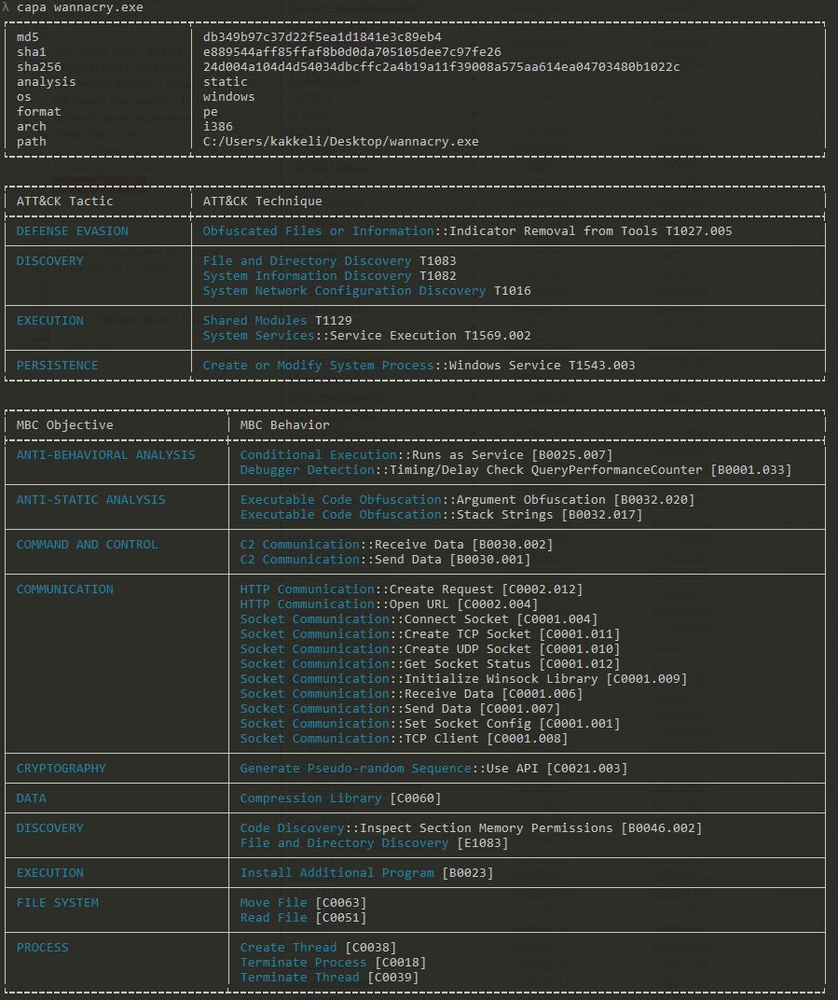
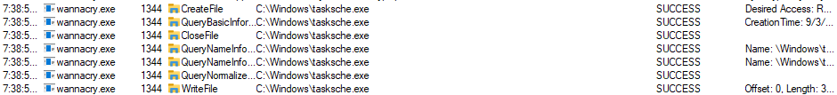

TCM PMAT Course Final Report:
Analysis of WannaCry.exe ransowmare
This report is a course final for TCM Security's PMAT course. Like many other parcitipants, I also chose WannaCry, because it was the final big malware to analyze as a challenge in the course, and I had fun during the process. I highly recommend the Practical Malware Analysis and Triage (PMAT) course for anyone interested in malware analysis: https://academy.tcm-sec.com/p/practical-malware-analysis-triage
In this report, I'll dig into WannaCry ransomware through basic static and basic dynamic analysis, following with advanced static and advanced dynamic analysis. The focus is in following the methodology taught in the course. General behavior of this malware will only be analyzed, meaning that we'll leave out deeper topics like how the file encryption was implement or how the malware spreads around or communicates.
I acknowledge that these are topics that should be covered in a professional malware analysis report.
Basic Static Analysis
Strings
For string analysis I used FLOSS which is a neat open source tool built in FlareVM
One of the first things that come up with a quick floss lookup is the URL with a long domain name. Other interesting things we can see right above the URL are path names with string replacements (%s) and a filename tasksche.exe.
Additionally the !This program cannot be run in DOS mode. line pops up multiple times in the strings output, giving us a hint that there are multiple executables that are being unpacked at some point.
Moving forward, we can also find cmd.exe, icacls and attrib +h hinting us about command execution, privilege escalation and hiding files.
PEView
PEView is a handy tool for quick Portable Executable analysis.
From raw data, we can verify that there is the magic byte MZ at the beginning of the file, verifying us that this is indeed a portable executable.
We can also take a look at the diffences between Virtual Size and Size of Raw Data.
<
After converting both values from HEX to DEC, we can see that there's a small size difference between the two, hinting that something small is being unpacked.
➜ ~ echo $((16#00008BCA))
35786
➜ ~ echo $((16#00009000))
36864PEStudio
With PEStudio, we can do more deeper PE analysis. Let's look at the imports, because there are a lot of them flagged.
Some WinAPI calls in interest are for example:
InternetOpenA and InternetOpenUrlA
Common for C2 communications. In this case, we can anticipate that this is possibly used for the long URL we saw in the strings output earlier.
CreateServiceA and ChangeServiceConfig2A
Along with other service interraction commands, it seems a lot like the malware creates a persistent service.
CryptGenRandom and CryptAcquireContextA
API calls used for cryptography.
MalAPI.io is a handy tool to check these in more detail.
Additionally, there are lots of calls for WinSocket DLL (close, receive, send, etc), so it seems likely that the executable is opening ports and attempting connections to various ports.
CAPA
Capa output with MITRE ATT&CK references added just as a bonus. 
Basic Dynamic Analysis
First run (with internet simulation enabled)
The first run for wannacry with internet simulation enabled does nothing. Looking into Wireshark, we can see that there is a HTTP 200 OK response returned from inetsim to a GET request for the long URL we saw from strings output earlier:
After shutting down inetsim, we can finally get the malware running successfully on our lab machine. Local admin rights are still required to run the executable.
Some of the visible symptoms we can start see shortly after execution:
- Desktop file icons change and, for example, there's no image viewer found to open jpeg files when trying to open them.
@WanaDecryptor.exefile appears on desktop along with@Please_read_me.txt.- Background image changes and a popup window appears with instructions to send bitcoin.
- Files on desktop get renamed with a
.WNCRYextension. - Gradually the operating system becomes almost impossible to use, because files or programs cannot be opened anymore.
Host-based indicators
We'll use procmon to analyze host-based indicators.
When filtering with File operations in procmon we can see that wannacry.exe creates a file with a name taskche.exe.

Looking into process tree with procmon, we can see that wannacry.exe has spawned a child process tasksche.exe.
When filtering in procmon with the PID of the child-process, we can see where everything was unpacked on the file system.
Let's check that the directory really is there. It's hidden (remember the attrib +h string from earlier):
And full contents can be seen under the directory itself.
Looking into Services under task manager, we can see that there's a service created with the same name as the hidden directory above.
It's likely that this is for additional persistance in case the computer is rebooted.
Digging more into File operations of tasksche.exe, we can see it reading a file, creating a new file with a .WNCRYT extension, writing the file and setting its basic information.
There are also Registry operations we can look at with Procmon.
Especially the PendingFileRenameOperations is interesting, showing the file name which being encrypted.
Network-based indicators
Shortly after executing the malware, we can see in TcpView a massive amount of Syn Sent commands going to various IPs to port 445.
The malware is trying to spread around the network by using the Eternal Blue exploit on computers that use an older SMB version.

Spending a bit more time on TcpView we can also see taskhsvc.exe listening on port 9050.
Advaced Static Analysis
Next let's look into wannacry.exe with cutter. The basic overview shows us nicely a collection of information.
In cutter, let's jump to main function and open graph view. From the top, we can see again a string reference to the URL with a long domain name which is pushed to stack to esi register.
From there an API call to InternetOpenA is prepared with multiple push instructions, following the call itself. Then another a call to InternetOpenUrlA is being marshalled before it's called.
For this API call esi is being passed an attribute, and we can see from the below graph that the URL string reference was moved to esi at the beginning of the main function.
At the end edi is tested against itself and a jump will follow if the value from that test is zero (Zero Flag is set to 1).
We can see also from the decompiled code more clearly that result of InternetOpenUrlA is assigned to eax, which is assigned to edi and then tested against itself:
Why is this test (test edi,edi) so important?
It's the killswitch of the malware. The malware executes only, if the URL above does not return anything to it (result is empty or URL is unreachable).
Verifying the kill switch (advanced dynamic analysis)
We can verify the kill switch we saw above in cutter by opening wannacry.exe with a debugger. In this case x32dbg was being used.
We already know the position of main function from cutter. For this example I copied the memory address where the URL string was moved to esi (memory location is 0040814A).
We'll set our first breakpoint there to prevent the malware from executing any further during debugging. Looking more down in the debugger, we can see the same jump instruction (jne) after test edi,edi we saw in cutter's graph view earlier.
Let's put another breakpoint there and walk the program in debugger until we hit that breakpoint.
Once we've hit the breakpoint, let's take a look at our registers, pointers and flags. In this case Zero Flag (ZF) is what we want to manipulate.
With a ZF value of 0, the malware would execute normally (meaning that we didn't receive any response from that long URL). We can flip this to 1 in the debugger (meaning that the result of the test against edi was 0, i.e. we got a response from the long URL), and then continue running the malware normally from within the debugger. Nothing will happen in that case.
YARA rule
This a simple YARA rule for detecting the original WannaCry ransomware. The conditions look for a portable executable magic byte at the beginning of the file and then for two of the strings, the long URL and tasksche.exe.
rule WannaCry {
meta:
last_updated = "2024-09-06"
author = "sumikko"
description = "A simple Yara rule for WannaCry"
strings:
$url = "http://www.iuqerfsodp9ifjaposdfjhgosurijfaewrwergwea.com"
$tasksche = "tasksche.exe"
$PE_magic_byte = "MZ"
condition:
$PE_magic_byte at 0 and
($url and $tasksche)
}